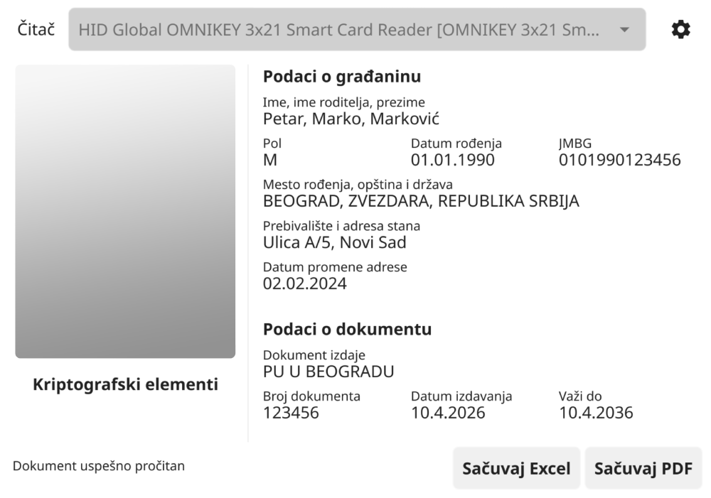

- Pokrenite preuzeti program klikom na ikonicu. Pojaviće se upozorenje da program nije verifikovan. Zatvorite upozorenje i otvorite System Settings. U sekciji Privacy & Security sa leve strane, otvorite Security. Kliknite na Open Anyway koje se nalazi pored imena Baš Čelik programa.
- Ponovo pokrenite Baš Čelik program. Sada bi program trebalo da se otvori bez problema.
-
Povežite čitač kartica za računar i ubacite ličnu kartu u čitač. Dokument će se pročitati, nakon
čega klikom na dugme možete sačuvati PDF koji izgleda kao PDF dobijen iz zvanične aplikacije.
